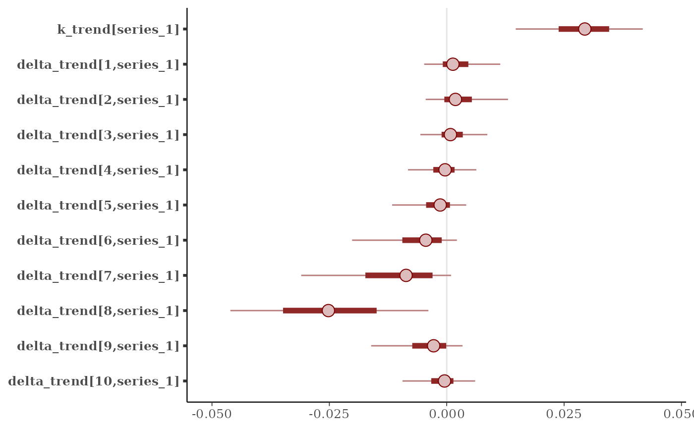
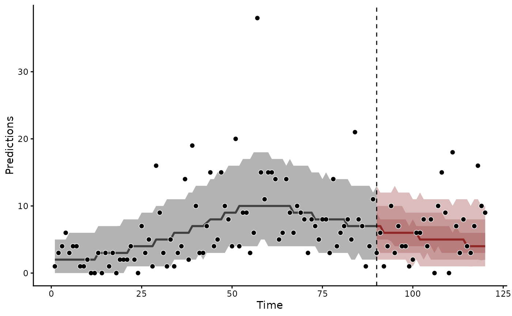

A trend that grows at a constant rate between changepoints, as in
Prophet (Taylor and Letham 2018). Linear growth is unbounded.
Logistic growth saturates at a carrying capacity that data
supplies. The constructor records its arguments. The model
evaluates them against the data.
Usage
PW(
time = NA,
series = NA,
cap = NA,
n_changepoints = 10,
changepoint_range = 0.8,
changepoint_scale = 0.3,
growth = "linear",
n_lv = NULL,
trend_map = NULL
)Arguments
- time
The unquoted name of the
numericorintegervariable indatathat holds each row's time. Defaults totime.- series
The unquoted name of the
factorvariable indatathat names each row's series. Its levels fix the order of the series. A trend needs this column even for a single series. Defaults toseries.- cap
The unquoted name of the variable in
datathat holds the carrying capacity of a logistic model, on the response scale. It is numeric and can vary by time and series. Defaults tocap. A logistic model whose data lack the column is refused.- n_changepoints
A positive integer: the number of potential changepoints, spaced evenly over the first
changepoint_rangeof the time points indata. Defaults to10.- changepoint_range
A number in
(0, 1]: the share of the series that holds the potential changepoints. The default0.8leaves the last fifth with the growth rate of the last changepoint. A changepoint among the final points would be estimated from too few observations to trust in a forecast.- changepoint_scale
A positive number: the typical change in growth at one changepoint over the whole series, in link units for linear growth and in logits for logistic growth. For a series of
Ntime points each per-step rate change takesdouble_exponential(0, s * changepoint_scale / N), wheresis the factorget_prior()describes for linear growth and 1 for logistic growth. Larger values give a more flexible trend. The default0.3gives the ten default changepoints a prior median movement of the level of about half a unit over the series, the movement theLLT()slope prior allows. Prophet's default of0.05holds a link-scale trend close to a straight line.- growth
'linear'(the default) or'logistic'.- n_lv, trend_map
Factor models are not supported for
PW(). Supplying either is refused.
Details
Intercepts:
A linear trend takes its level from the observation formula, as
every other trend in mvgam does. y ~ 1 is its ordinary
observation formula.
A logistic trend contributes cap * inv_logit(...) on the link
scale. Its offset m_trend places the inflection in time. The
expectation saturates at cap when the observation formula omits
its intercept (y ~ -1 or y ~ 0 + ...). An intercept raises the
ceiling above cap.
Priors:
Time runs in steps 1, ..., N. The base growth rate takes
k_trend ~ normal(0, 2 s / (N - 1)), two units of growth over the
series at one standard deviation. The logistic inflection takes
m_trend ~ normal((N + 1) / 2, N / 2), centred on the middle of the
series. get_prior() shows the values for a given model.
The carrying capacity:
A market size, a population size or an ecological carrying capacity
can bound a series. growth = 'logistic' takes it from the cap
column, which can vary by series and by time. Every observation
needs a value. Under a non-identity link the capacity is moved to
the link scale, such as its log under poisson() or
negbinomial(). Give it on the scale of the response.
References
Taylor, S. J. and Letham, B. (2018). Forecasting at scale. The American Statistician, 72, 37-45. doi:10.1080/00031305.2017.1380080
See also
LLT() for a trend whose growth changes continuously.
get_prior() lists the default priors. The
forecast evaluation article
compares a piecewise trend with other trends out of sample.
Other trend models:
LLT(),
RW(),
ZMVN(),
list_trend_types(),
lv_axis()
Examples
# \dontrun{
set.seed(2024)
simdat <- sim_mvgam(family = poisson(), n_series = 1L,
n_timepoints = 120L)
mod <- mvgam(
y ~ 1,
trend_formula = ~ PW(growth = "linear"),
data = simdat$data_train,
family = poisson(),
chains = 2,
silent = 2
)
summary(mod)
#> Family: poisson
#> Links: mu = log
#> Formula: y ~ 1
#> Data: simdat$data_train (Number of observations: 90)
#> Trends: PW(linear)
#> Draws: 2 chains, each with iter = 2000; warmup = 1000; thin = 1;
#> total post-warmup draws = 2000
#>
#> == Observation Model ==
#> Regression Coefficients:
#> Estimate Est.Error l-95% CI u-95% CI Rhat Bulk_ESS Tail_ESS
#> Intercept 0.64 0.18 0.29 0.98 1.00 1105 1161
#>
#> == Trend Model ==
#> Trend Specific Parameters:
#> Estimate Est.Error l-95% CI u-95% CI Rhat Bulk_ESS
#> k_trend[series_1] 0.03 0.01 0.01 0.04 1.00 792
#> delta_trend[1,series_1] 0.00 0.01 -0.01 0.01 1.00 1075
#> delta_trend[2,series_1] 0.00 0.01 -0.01 0.02 1.00 1739
#> delta_trend[3,series_1] 0.00 0.00 -0.01 0.01 1.00 1663
#> delta_trend[4,series_1] -0.00 0.00 -0.01 0.01 1.00 1762
#> delta_trend[5,series_1] -0.00 0.00 -0.01 0.01 1.00 1693
#> delta_trend[6,series_1] -0.01 0.01 -0.02 0.00 1.01 1086
#> delta_trend[7,series_1] -0.01 0.01 -0.04 0.00 1.00 1139
#> delta_trend[8,series_1] -0.03 0.01 -0.05 -0.00 1.00 1040
#> delta_trend[9,series_1] -0.00 0.01 -0.02 0.00 1.00 1172
#> delta_trend[10,series_1] -0.00 0.00 -0.01 0.01 1.00 1628
#> Tail_ESS
#> k_trend[series_1] 948
#> delta_trend[1,series_1] 680
#> delta_trend[2,series_1] 1044
#> delta_trend[3,series_1] 1008
#> delta_trend[4,series_1] 988
#> delta_trend[5,series_1] 806
#> delta_trend[6,series_1] 778
#> delta_trend[7,series_1] 1022
#> delta_trend[8,series_1] 1471
#> delta_trend[9,series_1] 791
#> delta_trend[10,series_1] 680
#>
#> Draws were sampled using sampling(NUTS). For each parameter, Bulk_ESS
#> and Tail_ESS are effective sample size measures, and Rhat is the potential
#> scale reduction factor on split chains (at convergence, Rhat = 1).
#>
#> Next steps:
#> - `pp_check(fit)`: posterior predictive checks
#> - `forecast(fit, newdata = ...)`: out-of-sample forecasts
#> - `lfo_cv(fit)`: leave-future-out model comparison
#> Use `how_to_cite(fit)` for a methods paragraph and `methods_md(fit)` for its equations.
# The base growth rate and the rate change at each changepoint
mcmc_plot(mod, variable = "trend_params")

# The forecast continues the growth rate of the last changepoint
plot(forecast(mod, newdata = simdat$data_test))

# Next, score() rates the forecast against the held-out points
# }